ਵਿਰਾਸਤ ਵਿੱਚ ਤੁਹਾਡਾ ਸੁਆਗਤ ਹੈ
.webp)
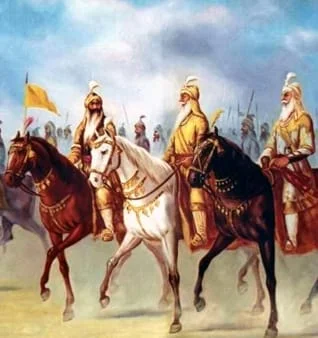
.webp)
.webp)
.webp)
.webp)
.webp)
.webp)
.webp)
.webp)

.webp)
.webp)
.webp)
.webp)
.webp)
.webp)
.webp)
.webp)
.webp)
.webp)
.webp)
.webp)
.webp)
.webp)
.webp)
.webp)
.webp)
.webp)
.webp)
.webp)
.webp)
.webp)
.webp)
.webp)
.webp)
.webp)
.webp)
.webp)
.webp)
.webp)
.webp)
.webp)
.webp)
.webp)
.webp)
.webp)
.webp)
.webp)
.webp)
.webp)
.webp)
.webp)
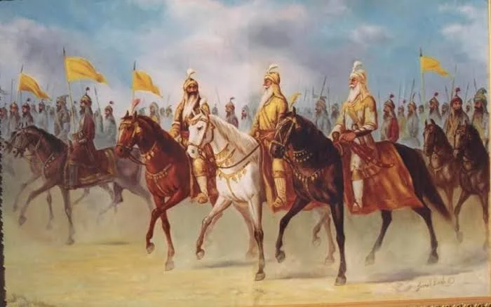


.webp)


.webp)


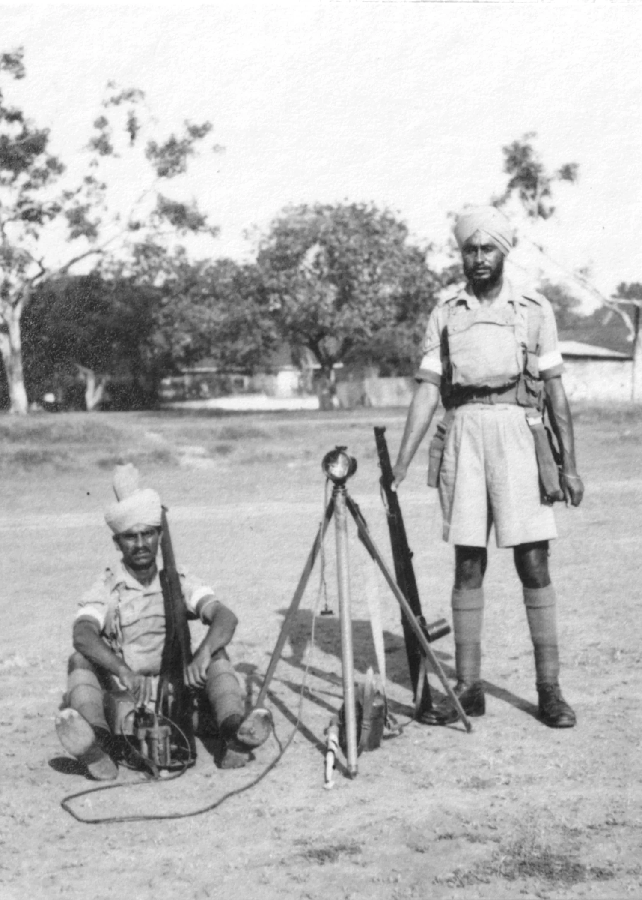
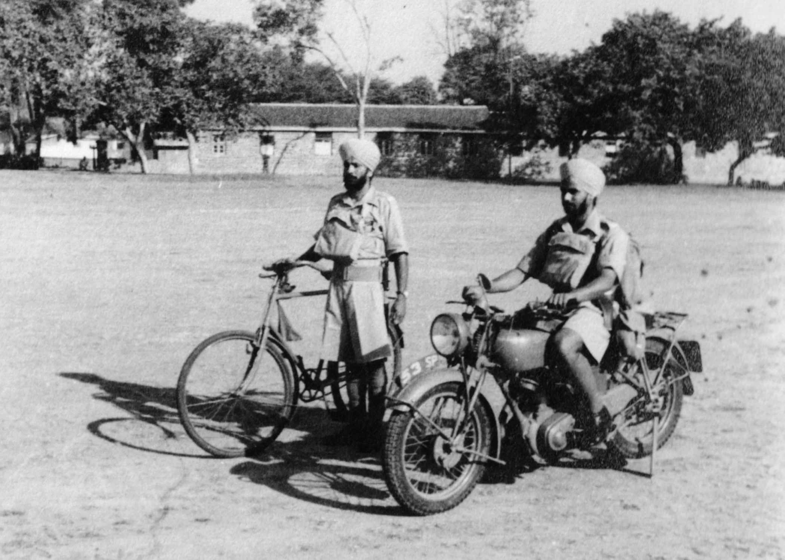


.webp)

ਉਹਨਾਂ ਨੂੰ ਤੁਹਾਡੇ ਮੋਬਾਈਲ ਡਿਵਾਈਸ 'ਤੇ ਦੇਖਣ ਲਈ ਵਿਅਕਤੀਗਤ ਪੰਨਿਆਂ 'ਤੇ ਕੋਡ.
ਸਿੱਖ ਰੈਜੀਮੈਂਟਲ ਸੈਂਟਰ ਦੀ ਸ਼ੁਰੂਆਤ ਸਤੰਬਰ 1921 ਵਿੱਚ ਹੋਈ, ਜਦੋਂ XXXV ਸਿੱਖ ਜੇਹਲਮ (ਹੁਣ ਵਿੱਚ
ਪਾਕਿਸਤਾਨ) ਨੂੰ ਇੱਕ ਸਿਖਲਾਈ ਕੇਂਦਰ ਵਿੱਚ ਤਬਦੀਲ ਕਰ ਦਿੱਤਾ ਗਿਆ ਸੀ। ਕਰਨਲ ਜੇਸੀ ਫ੍ਰੀਲੈਂਡ, ਸੀਬੀ, ਸੀਬੀਈ ਪਹਿਲੇ ਕਮਾਂਡੈਂਟ ਸਨ। ਦ
ਫਰਵਰੀ 1922 ਵਿਚ ਐਚਆਰਐਚ ਦ ਪ੍ਰਿੰਸ ਆਫ਼ ਵੇਲਜ਼ ਦੁਆਰਾ ਲਾਹੌਰ ਵਿਖੇ ਪਹਿਲੇ ਰੰਗ ਪੇਸ਼ ਕੀਤੇ ਗਏ ਸਨ।
ਨਾਕਾਫ਼ੀ ਸਿਖਲਾਈ/ਪ੍ਰਬੰਧਕੀ ਢਾਂਚੇ ਦੇ ਕਾਰਨ, ਕੇਂਦਰ ਨੌਸ਼ਹਿਰਾ, NWFP ਚਲਾ ਗਿਆ ਜਿੱਥੇ ਇਹ ਰਿਹਾ।
ਸਤੰਬਰ 1947 ਤੱਕ। ਵੰਡ ਤੋਂ ਬਾਅਦ, SRC ਅੰਬਾਲਾ ਚਲਾ ਗਿਆ ਅਤੇ ਕਰਨਲ ਐਮ ਐਮ ਬਾਦਸ਼ਾਹ ਪਹਿਲੇ ਭਾਰਤੀ ਅਫਸਰ ਬਣੇ।
ਕਮਾਂਡੈਂਟ।
1947-48 ਦੀ ਭਾਰਤ-ਪਾਕਿ ਜੰਗ ਦੌਰਾਨ, ਕੇਂਦਰ ਨੇ ਤੁਰੰਤ 1 ਸਿੱਖ, 2 ਸਿੱਖ ਅਤੇ 7 ਸਿੱਖ,
ਨਵੀਆਂ ਬਟਾਲੀਅਨਾਂ ਦੀ ਸਥਾਪਨਾ ਕਰਦੇ ਹੋਏ। ਇਹ ਸਿੱਖ ਫੌਜਾਂ ਅਤੇ ਬੇਘਰ ਹੋਏ ਪਰਿਵਾਰਾਂ ਲਈ ਪਨਾਹ ਵਜੋਂ ਵੀ ਕੰਮ ਕਰਦਾ ਸੀ।
11-15 ਮਾਰਚ 1952 ਦੇ ਵਿਚਕਾਰ, SRC ਮੇਰਠ ਚਲੇ ਗਏ। 1962 ਦੀ ਜੰਗ ਤੋਂ ਬਾਅਦ, ਨਵੇਂ ਸਿੱਖਾਂ ਨਾਲ ਵੱਡਾ ਪਸਾਰ ਹੋਇਆ
ਬਟਾਲੀਅਨਾਂ ਖੜ੍ਹੀਆਂ ਕੀਤੀਆਂ।
ਮੇਰਠ ਵਿਖੇ 24 ਸਾਲਾਂ ਬਾਅਦ, ਐਸਆਰਸੀ ਨੇ ਕਰਨਲ ਬੀ ਬੀ ਉਪਰੇਤੀ ਦੀ ਅਗਵਾਈ ਹੇਠ ਅਪ੍ਰੈਲ 1976 ਵਿੱਚ ਰਾਮਗੜ੍ਹ ਕੈਂਟ ਵਿੱਚ ਆਪਣੀ ਚੌਥੀ ਚਾਲ ਚਲਾਈ।
AVSM, VSM. 795 ਏਕੜ ਵਿੱਚ ਦਮੋਦਰ ਦੇ ਕਿਨਾਰੇ ਸਥਿਤ, ਛਾਉਣੀ ਮਾਰਚ 1941 ਦੀ ਹੈ ਜਦੋਂ
ਇਤਾਲਵੀ ਜੰਗੀ ਕੈਦੀਆਂ ਨੂੰ ਇੱਥੇ ਰੱਖਿਆ ਗਿਆ ਸੀ। ਚੀਨੀ ਐਕਸਪੀਡੀਸ਼ਨਰੀ ਫੋਰਸ (ਕੇਐਮਟੀ) ਦਾ 22ਵਾਂ ਅਤੇ 38ਵਾਂ ਡਿਵੀਜ਼ਨ ਸੀ
ਬਰਮਾ ਮੁਹਿੰਮ ਲਈ 1942-45 ਦੇ ਵਿਚਕਾਰ ਇੱਥੇ ਸੁਧਾਰ ਕੀਤਾ ਗਿਆ।
ਰਾਮਗੜ੍ਹ ਜਾਣ ਸਮੇਂ 30 ਸੰਗਮਰਮਰ ਦੇ ਥੰਮ੍ਹਾਂ ਅਤੇ ‘ਨਾਨਕਸ਼ਾਹੀ’ ਇੱਟਾਂ ਵਾਲਾ ਜੰਗੀ ਯਾਦਗਾਰ ਸੀ।
ਟੁਕੜੇ ਟੁਕੜੇ ਕਰਕੇ 16 ਮਾਰਚ 1977 ਨੂੰ ਰਾਮਗੜ੍ਹ ਵਿਖੇ ਦੁਬਾਰਾ ਇਕੱਠਾ ਕੀਤਾ ਗਿਆ। ਕਰਨਲ ਦੁਆਰਾ ਨੀਂਹ ਪੱਥਰ ਰੱਖਿਆ ਗਿਆ ਸੀ।
Regt ਮੇਜਰ ਜਨਰਲ RT ਮੋਰਲਿਨ, AVSM। ਪਹਿਲੀ ਪਲਟੂਨ (19ਵੀਂ ਪੀ.ਐਲ.) 24 ਮਈ 1976 ਨੂੰ ਮਾਰਕ ਦੇ ਨਾਲ ਤਸਦੀਕ ਕੀਤੀ ਗਈ ਸੀ।
ਧੂਮਧਾਮ ਉਦੋਂ ਤੋਂ, ਐਸਆਰਸੀ ਨੇ ਅਜਿਹੇ ਸਿਪਾਹੀ ਪੈਦਾ ਕੀਤੇ ਹਨ ਜਿਨ੍ਹਾਂ ਨੇ ਹਰ ਚੁਣੌਤੀ ਦਾ ਮੁਕਾਬਲਾ ਕੀਤਾ ਹੈ। ਇਸਦੇ ਲਈ
ਬੇਮਿਸਾਲ ਕੰਮ ਅਤੇ ਪ੍ਰਦਰਸ਼ਨ, SRC ਨੂੰ 15 ਜਨਵਰੀ ਨੂੰ 'ਜੀਓਸੀ-ਇਨ-ਸੀ, ਸੀਸੀ ਯੂਨਿਟ ਪ੍ਰਸ਼ੰਸਾ' ਨਾਲ ਸਨਮਾਨਿਤ ਕੀਤਾ ਗਿਆ ਸੀ
2015.
VIRASAT stands as a tribute to the Sikh Regiment's ethos —
"ਨਿਸ਼ਚੈ ਕਰ ਅਪਨੀ ਜੀਤ ਕਰੋ"
.
ਅਜਾਇਬ ਘਰ ਵਿੱਚ ਰੰਗ, ਜੰਗੀ ਟਰਾਫੀਆਂ, ਵਰਦੀਆਂ, ਹਥਿਆਰ, ਫੋਟੋਆਂ ਅਤੇ ਨਿੱਜੀ ਯਾਦਗਾਰਾਂ ਹਨ।
ਵਿਸ਼ਵ ਯੁੱਧਾਂ ਤੋਂ ਲੈ ਕੇ ਆਧੁਨਿਕ ਸੰਘਰਸ਼ਾਂ ਤੱਕ, ਕੁਰਬਾਨੀ ਦੀ ਇੱਕ ਸਦੀ ਤੋਂ ਵੱਧ ਦਾ ਇਤਿਹਾਸ। ਇਹ ਇੱਕ ਦੇ ਤੌਰ ਤੇ ਕੰਮ ਕਰਦਾ ਹੈ
ਭਰਤੀ ਕਰਨ ਵਾਲਿਆਂ ਲਈ ਪ੍ਰੇਰਨਾ ਅਤੇ ਸਾਬਕਾ ਸੈਨਿਕਾਂ ਲਈ ਤੀਰਥ ਯਾਤਰਾ, ਰੈਜੀਮੈਂਟ ਦੇ ਇਤਿਹਾਸ ਦੇ ਭੰਡਾਰ ਨੂੰ ਮੂਰਤੀਮਾਨ ਕਰਨਾ,
ਬਹਾਦਰੀ, ਅਤੇ ਵਿਰਾਸਤ.
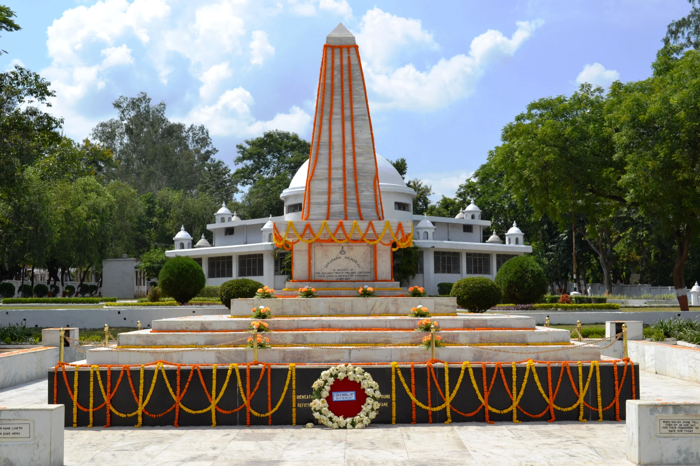
.webp)
.webp)


.webp)

.webp)
ਰਾਮਗੜ੍ਹ ਦਾ ਇਤਿਹਾਸ
ਰਾਮਗੜ੍ਹ ਦਾ ਇਤਿਹਾਸ ਹੇਠਲੇ ਪੈਲੀਓਲਿਥਿਕ ਯੁੱਗ ਤੋਂ ਲੱਭਿਆ ਜਾ ਸਕਦਾ ਹੈ, ਲੱਭੇ ਗਏ ਔਜ਼ਾਰਾਂ ਦੀ ਖੋਜ ਨਾਲ
ਦਮੋਦਰ ਨਦੀ ਦੇ ਨਾਲ. ਇਹ ਖੇਤਰ ਛੋਟਾਨਾਗਪੁਰ ਪਠਾਰ ਦੇ ਅੰਦਰ ਆਉਂਦਾ ਹੈ ਜੋ ਮਹਾਜਨਪਦ ਕਾਲ ਦੌਰਾਨ ਸੀ
ਰਾਜਾ ਜਰਾਸੰਧ ਦੇ ਅਧਿਕਾਰ ਖੇਤਰ ਵਿਚ ਸੀ। ਮੌਰੀਆ ਸਾਮਰਾਜ ਦੇ ਦੌਰਾਨ, ਰਾਜਾ ਅਸ਼ੋਕ ਨੇ ਇਸ ਉੱਤੇ ਕਬਜ਼ਾ ਕਰ ਲਿਆ
ਸਾਰਾ ਛੋਟਾਨਾਗਪੁਰ ਖੇਤਰ ਅਤੇ ਖੇਤਰ ਬਾਅਦ ਵਿੱਚ ਬੋਧੀ ਅਤੇ ਜੈਨ ਦੁਆਰਾ ਬਹੁਤ ਪ੍ਰਭਾਵਿਤ ਸੀ
ਸਭਿਆਚਾਰ. ਆਪਣੀ ਦੱਖਣ ਜਿੱਤ 'ਤੇ, ਗੁਪਤਾ ਸਾਮਰਾਜ ਦਾ ਰਾਜਾ ਸਮੁੰਦਰਗੁਪਤ, ਇਸ ਖੇਤਰ ਵਿੱਚੋਂ ਲੰਘਿਆ।
ਚੌਦ੍ਹਵੀਂ ਸਦੀ ਦੇ ਮੱਧ ਵਿਚ 1368 ਵਿਚ 'ਰਾਮਗੜ੍ਹ ਰਾਜ' ਦੀ ਸਥਾਪਨਾ ਹੋਈ ਜਿਸ ਦਾ ਮੋਢੀ ਰਾਜਾ ਰਾਜਾ ਸੀ |
ਬਗਦੇਉ ਸਿੰਘ ਆਪਣੀ ਰਾਜਧਾਨੀ ਸੀਰਾ ਸਥਿਤ ਸ. ਰਾਜਧਾਨੀ ਉਰਦਾ, ਬਦਾਮ, ਰਾਮਗੜ੍ਹ ਅਤੇ ਪਦਮਾ ਵੱਲ ਬਦਲਦੀ ਰਹੀ
ਪੂਰੇ ਸਮੇਂ ਦੌਰਾਨ ਅਤੇ ਅੰਤ ਵਿੱਚ 1670 ਵਿੱਚ ਰਾਮਗੜ੍ਹ ਵਾਪਸ ਚਲੇ ਗਏ।
ਈਸਟ ਇੰਡੀਆ ਕੰਪਨੀ ਨੂੰ ਬਾਦਸ਼ਾਹ ਸ਼ਾਹ ਆਲਮ ਦੂਜੇ ਦੁਆਰਾ 1771 ਵਿੱਚ ਰਾਮਗੜ੍ਹ ਖੇਤਰ ਦਾ ਪ੍ਰਬੰਧ ਕਰਨ ਦੇ ਅਧਿਕਾਰ ਦਿੱਤੇ ਗਏ ਸਨ ਅਤੇ ਕੈਪਟਨ
ਕਾਮਕ ਨੂੰ ਰਾਮਗੜ੍ਹ ਦਾ ਮਿਲਟਰੀ ਕੁਲੈਕਟਰ ਨਿਯੁਕਤ ਕੀਤਾ ਗਿਆ ਸੀ, ਜਿਸਦਾ ਹੈੱਡਕੁਆਰਟਰ ਚਤਰਾ ਵਿੱਚ ਸੀ। ਮਿਲਟਰੀ
ਰਾਮਗੜ੍ਹ ਜ਼ਿਲ੍ਹੇ ਵਿੱਚ ਨਾਗਪੁਰ, ਪਲਾਮੂ, ਹਜ਼ਾਰੀਬਾਗ, ਚਤਰਾ, ਗਿਰੀਡੀਹ ਅਤੇ ਕੋਡਰਮਾ ਸ਼ਾਮਲ ਸਨ। ਪੂਰਬੀ ਭਾਰਤ
ਇੱਥੇ ਤਾਇਨਾਤ ਕੰਪਨੀ ਫੌਜਾਂ ਨੂੰ 1831-32 ਵਿੱਚ ਕੋਲ ਵਿਦਰੋਹ ਨੂੰ ਦਬਾਉਣ ਲਈ ਵਰਤਿਆ ਗਿਆ ਸੀ। ਬਗਾਵਤ ਤੋਂ ਬਾਅਦ ਸੀ
ਨੂੰ ਦਬਾਇਆ ਗਿਆ, ਅੰਗਰੇਜ਼ਾਂ ਦੁਆਰਾ ਇਸ ਖੇਤਰ ਵਿੱਚ ਬਹੁਤ ਸਾਰੇ ਥਾਣੇ ਸਥਾਪਿਤ ਕੀਤੇ ਗਏ ਸਨ ਅਤੇ ਰਾਮਗੜ੍ਹ ਇੱਕ ਸੀ
ਉਹਨਾਂ ਨੂੰ।
ਮਾਰਚ 1940 ਵਿੱਚ, ਭਾਰਤੀ ਰਾਸ਼ਟਰੀ ਕਾਂਗਰਸ (INC) ਦਾ 53ਵਾਂ ਇਜਲਾਸ ਝੰਡਾ ਚੌਕ, ਰਾਮਗੜ੍ਹ ਵਿਖੇ ਹੋਇਆ।
ਮੌਲਾਨਾ ਅਬੁਲ ਕਲਾਮ ਆਜ਼ਾਦ ਦੀ ਪ੍ਰਧਾਨਗੀ - ਇਹ ਸਾਈਟ ਇਸ ਸਮੇਂ ਸਿੱਖ ਰੈਜੀਮੈਂਟਲ ਸੈਂਟਰ ਦੇ ਅੰਦਰ ਸਥਿਤ ਹੈ
ਮੇਨ ਆਫਿਸ ਕੰਪਲੈਕਸ ਦੇ ਸਾਹਮਣੇ। ਰਾਜਿੰਦਰ ਪ੍ਰਸਾਦ, ਮਹਾਤਮਾ ਗਾਂਧੀ, ਜਵਾਹਰ ਲਾਲ ਨਹਿਰੂ, ਸਰਦਾਰ ਪਟੇਲ, ਡਾ.
ਸਰੋਜਨੀ ਨਾਇਡੂ, ਖਾਨ ਅਬਦੁਲ ਗਫਾਰ ਖਾਨ, ਅਚਾਰੀਆ ਜੇਬੀ ਕ੍ਰਿਪਲਾਨੀ, ਉਦਯੋਗਪਤੀ ਜਮਨਾਲਾਲ ਬਜਾਜ ਅਤੇ ਹੋਰ
ਭਾਰਤੀ ਸੁਤੰਤਰਤਾ ਅੰਦੋਲਨ ਦੇ ਨੇਤਾਵਾਂ ਨੇ ਸੈਸ਼ਨ ਵਿੱਚ ਸ਼ਿਰਕਤ ਕੀਤੀ। ਮਹਾਤਮਾ ਗਾਂਧੀ ਨੇ ਖਾਦੀ ਅਤੇ ਪਿੰਡ ਵੀ ਖੋਲ੍ਹਿਆ ਸੀ
ਰਾਮਗੜ੍ਹ ਵਿਖੇ ਉਦਯੋਗ ਪ੍ਰਦਰਸ਼ਨੀ
ਰਾਮਗੜ੍ਹ ਛਾਉਣੀ ਦੀ ਰਸਮੀ ਤੌਰ 'ਤੇ ਸਥਾਪਨਾ ਮਾਰਚ 1941 ਵਿੱਚ ਕੀਤੀ ਗਈ ਸੀ, ਜਦੋਂ ਇਤਾਲਵੀ PsOW ਇੱਥੇ ਨਜ਼ਰਬੰਦ ਸਨ। ਜੰਗ ਦੇ ਤੌਰ ਤੇ
ਜਾਪਾਨ ਦੇ ਵਿਰੁੱਧ ਪੂਰਬੀ ਭਾਰਤ ਦੀਆਂ ਸਰਹੱਦਾਂ ਦੇ ਨੇੜੇ ਆਇਆ, ਇਤਾਲਵੀ PsOW ਨੂੰ ਯੋਲ ਕੈਂਪ ਵਿੱਚ ਮੁੜ ਸਥਾਪਿਤ ਕੀਤਾ ਗਿਆ
ਅਤੇ ਚੀਨੀ ਫ਼ੌਜਾਂ, ਜੋ ਬਰਮਾ ਤੋਂ ਪਿੱਛੇ ਹਟ ਗਈਆਂ ਸਨ, ਰਾਮਗੜ੍ਹ ਛਾਉਣੀ ਵਿੱਚ ਤਾਇਨਾਤ ਸਨ। 1942-1945 ਦੇ ਵਿਚਕਾਰ,
ਹਜ਼ਾਰਾਂ ਚੀਨੀ (ਕੁਓਮਿਨਤਾਂਗ) ਨੂੰ ਇੱਥੇ ਅਮਰੀਕੀ ਟ੍ਰੇਨਰਾਂ ਦੁਆਰਾ ਫੌਜ ਲਈ ਸਿਖਲਾਈ ਅਤੇ ਲੈਸ ਕੀਤਾ ਗਿਆ ਸੀ
ਜਪਾਨ ਦੇ ਖਿਲਾਫ ਕਾਰਵਾਈ.
ਸਿੱਖ ਰੈਜੀਮੈਂਟਲ ਸੈਂਟਰ ਨੂੰ ਚਾਰ ਮਿਲਟਰੀ ਸਪੈਸ਼ਲ ਟਰੇਨਾਂ ਵਿੱਚ ਮੇਰਠ ਤੋਂ ਰਾਮਗੜ੍ਹ ਛਾਉਣੀ ਵਿੱਚ ਤਬਦੀਲ ਕੀਤਾ ਗਿਆ।
ਅਪ੍ਰੈਲ 1976, ਜਿੱਥੇ ਇਸ ਨੂੰ 795 ਏਕੜ ਜ਼ਮੀਨ ਅਲਾਟ ਕੀਤੀ ਗਈ ਸੀ। ਇਹ ਕਦਮ ਕਰਨਲ ਬੀ.ਬੀ.ਉਪਰੇਤੀ, ਏ.ਵੀ.ਐਸ.ਐਮ., ਵੀ.ਐਸ.ਐਮ.
ਜਿਸਨੇ ਅਪ੍ਰੈਲ 1978 ਤੱਕ ਕੇਂਦਰ ਦੀ ਕਮਾਨ ਸੰਭਾਲੀ।
ਜੁਲਾਈ 1981 ਤੱਕ ਕੇਂਦਰ ਦੇ ਏਕੀਕਰਨ 'ਤੇ ਕੰਮ ਕੀਤਾ। ਉਦੋਂ ਤੋਂ ਰਾਮਗੜ੍ਹ ਛਾਉਣੀ ਦੀ ਵਿਲੱਖਣਤਾ ਹੈ।
ਇੱਕੋ ਕੈਂਪਸ ਦੀ ਸੀਮਾ ਦੇ ਅੰਦਰ ਦੋ ਇਨਫੈਂਟਰੀ ਰੈਜੀਮੈਂਟਲ ਸੈਂਟਰਾਂ ਦੀ ਰਿਹਾਇਸ਼ ਦਾ ਅੰਤਰ।
ਸਿੱਖ ਰੈਜੀਮੈਂਟ ਦਾ ਇਤਿਹਾਸ
ਸਿੱਖ ਰੈਜੀਮੈਂਟ ਦੀ ਸਥਾਪਨਾ 1846 ਵਿੱਚ ਪਹਿਲੀ ਐਂਗਲੋ-ਸਿੱਖ ਜੰਗ ਦੇ ਅੰਤ ਵਿੱਚ ਹੋਈ ਸੀ ਜਦੋਂ ਕਿ ਇਸ ਦੀਆਂ ਜੜ੍ਹਾਂ ਲੱਭੀਆਂ ਗਈਆਂ ਹਨ।
ਸਿੱਧਾ ਮਹਾਰਾਜਾ ਰਣਜੀਤ ਸਿੰਘ ਦੀ ਖਾਲਸਾ ਫੌਜ ਨੂੰ। ਸ਼ੁਰੂਆਤੀ ਦੋ ਬਟਾਲੀਅਨਾਂ ਨੂੰ "XIV
ਫਿਰੋਜ਼ਪੁਰ ਸਿੱਖ" ਅਤੇ "XV ਲੁਧਿਆਣਾ ਸਿੱਖ" ਨੂੰ 01 ਅਗਸਤ 1846 ਨੂੰ ਉਭਾਰਿਆ ਗਿਆ ਸੀ, ਜਿਸ ਤੋਂ ਬਾਅਦ ਉਭਾਰਿਆ ਗਿਆ ਸੀ।
1856 ਵਿੱਚ "XLV Rattray's", 1887 ਵਿੱਚ "XXXVI ਸਿੱਖ" ਅਤੇ 1901 ਵਿੱਚ "XLVII" ਸਿੱਖ। ਇੱਕ ਛੇਵੀਂ ਬਟਾਲੀਅਨ, "XXXV ਸਿੱਖ"
ਅੱਜ ਸਿੱਖ ਰੈਜੀਮੈਂਟਲ ਸੈਂਟਰ (SRC) ਹੈ। ਵਰਤਮਾਨ ਵਿੱਚ, ਰੈਜੀਮੈਂਟ 21 ਰੈਗੂਲਰ ਇਨਫੈਂਟਰੀ ਤੱਕ ਵਧ ਗਈ ਹੈ
ਬਟਾਲੀਅਨ, ਤਿੰਨ ਰਾਸ਼ਟਰੀ ਰਾਈਫਲਜ਼ ਬਟਾਲੀਅਨ, ਇੱਕ ਐਸਐਫਸੀ ਯੂਨਿਟ ਅਤੇ ਤਿੰਨ ਟੈਰੀਟੋਰੀਅਲ ਆਰਮੀ ਬਟਾਲੀਅਨ। ਵਿੱਚ
ਇਸ ਤੋਂ ਇਲਾਵਾ, 4 ਮਕੈਨਾਈਜ਼ਡ ਇਨਫੈਂਟਰੀ ਬਟਾਲੀਅਨ (ਪਹਿਲਾਂ XIV ਫਿਰੋਜ਼ਪੁਰ ਸਿੱਖ/1 ਸਿੱਖ), INS ਕਿਰਪਾਨ (ਏ.
ਖੁਖਰੀ-ਕਲਾਸ ਕਾਰਵੇਟ, 2023 ਵਿੱਚ ਡੀ-ਕਮਿਸ਼ਨ) ਅਤੇ ਨੰਬਰ 12 ਸਕੁਐਡਰਨ (ਟਰਾਂਸਪੋਰਟ), ਆਈਏਐਫ ਨਾਲ ਸਬੰਧਤ ਹਨ।
ਸਿੱਖ ਰੈਜੀਮੈਂਟ
1947 ਵਿੱਚ ਆਜ਼ਾਦੀ ਤੋਂ ਪਹਿਲਾਂ, ਸਿੱਖ ਰੈਜੀਮੈਂਟ ਨੇ ਦੁਨੀਆ ਭਰ ਵਿੱਚ ਕਈ ਯੁੱਧਾਂ ਵਿੱਚ ਹਿੱਸਾ ਲਿਆ ਜਿਵੇਂ ਕਿ
ਚੀਨ ਵਿੱਚ ਦੂਜੀ ਅਫੀਮ ਯੁੱਧ, ਦੂਜੀ ਐਂਗਲੋ-ਅਫਗਾਨ ਜੰਗ, ਉੱਤਰੀ-ਪੱਛਮੀ ਸਰਹੱਦ 'ਤੇ ਕਈ ਮੁਹਿੰਮਾਂ,
ਪੱਛਮੀ ਫਰੰਟ, ਗੈਲੀਪੋਲੀ ਅਤੇ ਮੇਸੋਪੋਟੇਮੀਆ ਪਹਿਲੇ ਵਿਸ਼ਵ ਯੁੱਧ ਦੀਆਂ ਮੁਹਿੰਮਾਂ, ਤੀਜੀ ਐਂਗਲੋ-ਅਫਗਾਨ ਯੁੱਧ ਅਤੇ
ਦੂਜੇ ਵਿਸ਼ਵ ਯੁੱਧ ਦੀਆਂ ਉੱਤਰੀ ਅਫ਼ਰੀਕੀ, ਇਤਾਲਵੀ ਅਤੇ ਬਰਮਾ ਮੁਹਿੰਮਾਂ, ਬਹੁਤ ਸਾਰੇ ਬਹਾਦਰੀ ਪੁਰਸਕਾਰਾਂ ਅਤੇ
ਪ੍ਰਕਿਰਿਆ ਵਿੱਚ ਲੜਾਈ ਦੇ ਸਨਮਾਨ.
ਆਜ਼ਾਦੀ ਤੋਂ ਬਾਅਦ, 1947-1948 ਦੀ ਭਾਰਤ-ਪਾਕਿਸਤਾਨ ਜੰਗ ਵਿੱਚ, 1 ਸਿੱਖ ਪਹਿਲੀ ਯੂਨਿਟ ਸੀ ਜਿਸ ਨੂੰ ਹਵਾਈ ਜਹਾਜ਼ ਰਾਹੀਂ ਭੇਜਿਆ ਗਿਆ ਸੀ।
ਕਸ਼ਮੀਰ ਘਾਟੀ ਨੂੰ ਕਬਾਇਲੀ ਹਮਲਾਵਰਾਂ ਤੋਂ ਬਚਾਉਣ ਲਈ 27 ਅਕਤੂਬਰ 1947 ਨੂੰ ਸ੍ਰੀਨਗਰ - ਇਹ ਇਤਿਹਾਸਕ ਘਟਨਾ ਹੈ
"ਪੈਦਲ ਦਿਵਸ" ਵਜੋਂ ਮਨਾਇਆ ਜਾਂਦਾ ਹੈ। ਦੀ ਸਿੱਖ ਰੈਜੀਮੈਂਟ ਦੀਆਂ ਬਟਾਲੀਅਨਾਂ ਨੇ ਚੀਨ-ਭਾਰਤ ਯੁੱਧ ਵਿਚ ਬਹਾਦਰੀ ਨਾਲ ਲੜਿਆ
1962, 1965 ਦੀ ਭਾਰਤ-ਪਾਕਿਸਤਾਨ ਜੰਗ, 1971 ਦੀ ਭਾਰਤ-ਪਾਕਿਸਤਾਨ ਜੰਗ ਅਤੇ 1999 ਦੀ ਕਾਰਗਿਲ ਜੰਗ ਨੇ ਬਹੁਤ ਕਮਾਈ ਕੀਤੀ।
ਸਨਮਾਨ ਅਤੇ ਪ੍ਰਸ਼ੰਸਾ. ਰੈਜੀਮੈਂਟ ਨੇ 106 ਬੈਟਲ ਆਨਰ ਅਤੇ 18 ਥੀਏਟਰ ਆਨਰਜ਼ ਪ੍ਰਾਪਤ ਕੀਤੇ ਹਨ ਅਤੇ ਇਹਨਾਂ ਵਿੱਚੋਂ ਇੱਕ ਹੈ
ਭਾਰਤੀ ਫੌਜ ਦੀ ਸਭ ਤੋਂ ਸਜੀਆਂ ਇਨਫੈਂਟਰੀ ਰੈਜੀਮੈਂਟਾਂ।
ਰੈਜੀਮੈਂਟ ਆਪਣੇ ਸਿਪਾਹੀਆਂ ਨੂੰ ਜ਼ਿਆਦਾਤਰ ਪੰਜਾਬ, ਹਰਿਆਣਾ ਅਤੇ ਜੰਮੂ ਅਤੇ ਕਸ਼ਮੀਰ ਰਾਜਾਂ ਤੋਂ ਖਿੱਚਦੀ ਹੈ - ਫੌਜਾਂ
ਮੁੱਖ ਤੌਰ 'ਤੇ "ਜਾਟ ਸਿੱਖ" ਹਨ ਜੋ ਆਪਣੇ ਚਰਿੱਤਰ ਦੀ ਕਠੋਰਤਾ, ਅਨੁਕੂਲਤਾ ਦੀ ਭਾਵਨਾ ਅਤੇ ਮੌਜ-ਮਸਤੀ ਲਈ ਜਾਣੇ ਜਾਂਦੇ ਹਨ।
ਕੁਦਰਤ, ਜੋ ਕਿ ਇੱਕ "ਸੰਤ ਸਿਪਾਹੀ" ਦਾ ਸਰਵੋਤਮ ਤੱਤ ਹੈ, ਜਿਵੇਂ ਕਿ 10ਵੇਂ ਸਿੱਖ ਗੁਰੂ, ਸ੍ਰੀ ਦੁਆਰਾ ਪ੍ਰਚਾਰਿਆ ਗਿਆ ਸੀ।
ਗੁਰੂ ਗੋਬਿੰਦ ਸਿੰਘ
ਹਵਾਲਦਾਰ ਈਸ਼ਰ ਸਿੰਘ, ਆਈਓਐਮ, ਆਈਡੀਐਸਐਮ
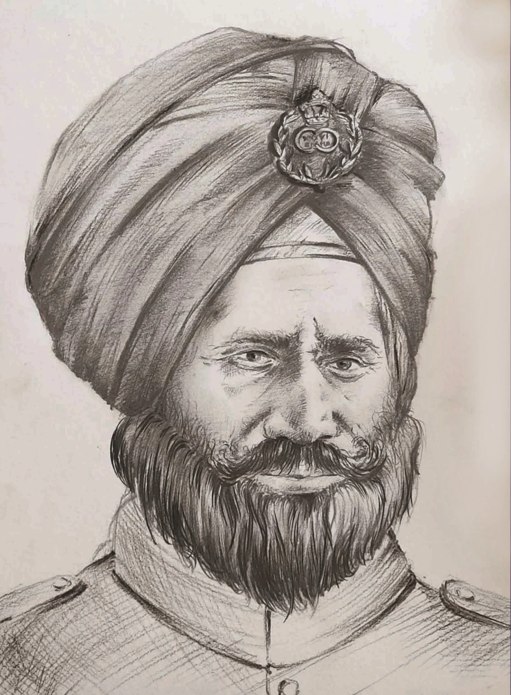
ਹੌਲਦਾਰ ਈਸ਼ਰ ਸਿੰਘ ਦਾ ਜਨਮ 12 ਸਤੰਬਰ 1858 ਨੂੰ ਪਿੰਡ ਝੋਰੜਾਂ (ਨੇੜੇ ਜਗਰਾਉਂ) ਲੁਧਿਆਣਾ, ਪੰਜਾਬ ਵਿਖੇ ਹੋਇਆ ਸੀ। ਸਰਦਾਰ ਦੁੱਲਾ ਸਿੰਘ ਦਾ ਖੇਤੀ ਪਰਿਵਾਰ। ਬਚਪਨ ਤੋਂ ਹੀ, ਉਹ ਇੱਕ ਸਿਪਾਹੀ ਬਣਨ ਦੀ ਇੱਛਾ ਰੱਖਦਾ ਸੀ ਅਤੇ ਸ਼ੁਰੂ ਵਿੱਚ 11 ਸਾਲ ਤੱਕ ਪੰਜਾਬ ਫਰੰਟੀਅਰ ਫੋਰਸ ਦੀ ਸੇਵਾ ਕੀਤੀ। 1887 ਵਿਚ, ਉਹ 36ਵੇਂ ਸਿੱਖਾਂ ਵਿਚ ਭਰਤੀ ਹੋਇਆ ਸੀ।
ਤੋਂ ਸੱਜੇ ਸ਼ੁਰੂ ਵਿੱਚ, ਈਸ਼ਰ ਨੂੰ ਕੈਂਪਾਂ ਵਿੱਚ ਪ੍ਰਸ਼ਾਸਕੀ ਕੰਮਾਂ ਦੀ ਬਜਾਏ ਸਰਗਰਮ ਫੀਲਡ ਡਿਊਟੀਆਂ ਕਰਨ ਦਾ ਸ਼ੌਕ ਸੀ। ਆਪਣੇ ਮਾਰਸ਼ਲ ਗੁਣਾਂ ਦੇ ਕਾਰਨ, ਉਸਨੇ ਇੱਕ ਜ਼ਬਰਦਸਤ ਫੌਜੀ ਸਾਖ ਵਿਕਸਿਤ ਕੀਤੀ ਅਤੇ ਪੂਰੀ ਕਮਾਂਡ ਕੀਤੀ ਉਸ ਦੀਆਂ ਫ਼ੌਜਾਂ ਦੀ ਵਫ਼ਾਦਾਰੀ।
ਮਹਾਂਕਾਵਿ ਦੌਰਾਨ ਸਾਰਾਗੜ੍ਹੀ ਦੀ ਲੜਾਈ, ਉਸਨੇ ਇੱਕ ਵਿਰੋਧੀ ਨਾਲ ਲੜਦੇ ਹੋਏ ਆਪਣੀ ਲੀਡਰਸ਼ਿਪ ਦੇ ਹੁਨਰ ਦਾ ਇੱਕ ਬਹਾਦਰੀ ਵਾਲਾ ਬਿਰਤਾਂਤ ਦਿੱਤਾ ਸੰਖਿਆ ਵਿੱਚ ਬਹੁਤ ਉੱਤਮ। ਸਾਰੀਆਂ ਮੁਸ਼ਕਲਾਂ ਦੇ ਬਾਵਜੂਦ, ਉਸਨੇ ਇਕੱਠੇ ਹੋ ਕੇ, ਸਮਰਪਣ ਕਰਨ ਲਈ ਦੁਸ਼ਮਣ ਦੀਆਂ ਕਈ ਪੇਸ਼ਕਸ਼ਾਂ ਨੂੰ ਠੁਕਰਾ ਦਿੱਤਾ ਆਪਣੇ ਸਿਪਾਹੀਆਂ ਅਤੇ ਉਨ੍ਹਾਂ ਨੂੰ ਲੜਦੇ ਰਹਿਣ ਲਈ ਪ੍ਰੇਰਿਤ ਕੀਤਾ। ਜਦੋਂ ਉਸ ਦੇ ਅੱਧੇ ਦੇ ਕਰੀਬ ਬੰਦੇ ਜਾਂ ਤਾਂ ਮਰ ਚੁੱਕੇ ਸਨ ਜਾਂ ਲੜਾਈ ਦੇ ਪਹਿਲੇ ਛੇ ਘੰਟਿਆਂ ਵਿੱਚ ਜ਼ਖਮੀ ਹੋ ਗਿਆ, ਉਸਨੇ ਬਾਕੀਆਂ ਨੂੰ ਆਪਣੀ ਲੂਪ-ਹੋਲ ਛੱਡਣ ਦਾ ਹੁਕਮ ਦਿੱਤਾ ਲੜਾਈਆਂ ਅਤੇ ਦੁਸ਼ਮਣ ਨੂੰ ਹੱਥੋਂ-ਹੱਥ ਲੜਾਈ ਵਿੱਚ ਸ਼ਾਮਲ ਕਰੋ।
ਅੰਤਿਮ ਪਲ ਉਸ ਦੇ ਜੀਵਨ ਅਤੇ ਅਗਵਾਈ ਦਾ ਵਰਣਨ ਫੌਜੀ ਇਤਿਹਾਸਕਾਰ ਮੇਜਰ ਜਨਰਲ ਜੇਮਸ ਲੁੰਟ ਦੁਆਰਾ ਕੀਤਾ ਗਿਆ ਹੈ ਸਾਰਾਗੜ੍ਹੀ: ਸਿੱਖਸ ਐਂਡ ਪਠਾਨ, 1897 (ਹਿਸਟਰੀ ਟੂਡੇ ਵਿੱਚ ਪ੍ਰਕਾਸ਼ਿਤ, ਜਿਲਦ 27, ਅੰਕ 04 ਅਪ੍ਰੈਲ 1977):
“ਹੁਣ ਈਸ਼ਰ ਸਿੰਘ ਨੂੰ ਪਤਾ ਸੀ ਕਿ ਖੇਡ ਖਤਮ ਹੋ ਗਈ ਹੈ। ਛੱਤ 'ਤੇ ਵਾਪਸ ਆ ਕੇ, ਉਸਨੇ ਆਪਣਾ ਆਖਰੀ ਸੰਦੇਸ਼ ਫਲੈਸ਼ ਕੀਤਾ ਫੋਰਟ ਲਾਕਹਾਰਟ - ਦੁਸ਼ਮਣ ਕਿਲ੍ਹੇ ਵਿੱਚ ਸੀ, ਸਿੱਖ ਹਾਵੀ ਹੋ ਗਏ ਸਨ ਪਰ ਆਤਮ ਸਮਰਪਣ ਨਹੀਂ ਕਰਨਗੇ। ਫਿਰ, ਹੈਲੀਓਗ੍ਰਾਫ ਨੂੰ ਧਿਆਨ ਨਾਲ ਕੇਸ ਵਿੱਚ ਰੱਖ ਕੇ, ਉਹ ਆਪਣੇ ਆਦਮੀਆਂ ਵਿੱਚ ਸ਼ਾਮਲ ਹੋਣ ਲਈ ਆਖਰੀ ਵਾਰ ਹੇਠਾਂ ਗਿਆ ਉਨ੍ਹਾਂ ਦਾ ਅੰਤਿਮ ਸਟੈਂਡ। ਕਿਤੇ ਖੂਨ, ਧੂੰਏਂ ਤੇ ਲਾਟਾਂ ਦੇ ਇਸ ਘੱਲੂਘਾਰੇ ਵਿੱਚ ਹੌਲਦਾਰ ਸ. ਈਸ਼ਰ ਸਿੰਘ ਪਠਾਨ ਦੇ ਛੁਰੀ 'ਤੇ ਡਿੱਗ ਪਿਆ।”
ਸਾਰਾਗੜ੍ਹੀ ਦੀ ਲੜਾਈ
ਸਾਰਾਗੜ੍ਹੀ ਦੀ ਲੜਾਈ 36ਵੇਂ ਸਿੱਖਾਂ (ਹੁਣ, 4 ਸਿੱਖ) ਦੁਆਰਾ ਲੜੀ ਗਈ ਸਮੂਹਿਕ ਬਹਾਦਰੀ ਦੀ ਸਭ ਤੋਂ ਵੱਡੀ ਗਾਥਾ ਹੈ।
ਅਤੇ ਯੁੱਧ ਦੇ ਇਤਿਹਾਸ ਵਿੱਚ ਹਿੰਮਤ। ਸਾਲ 1897 ਵਿੱਚ, NWFP ਦੇ ਕਬਾਇਲੀ ਇਕੱਠ (“ਜਿਰਗਾਹਾਂ”) (ਹੁਣ
ਖੈਬਰ-ਪਖਤੂਨਖਵਾ) ਨੇ ਵੱਖ-ਵੱਖ ਥਾਵਾਂ 'ਤੇ ਤਾਇਨਾਤ ਬ੍ਰਿਟਿਸ਼ ਭਾਰਤੀ ਫੌਜ ਦੇ ਵਿਰੁੱਧ ਉੱਠਣ ਦਾ ਫੈਸਲਾ ਕੀਤਾ।
ਖੈਬਰ ਖੇਤਰ.
ਸਮਾਣਾ ਰਿਜ, ਦੱਖਣੀ ਖੈਬਰ 'ਤੇ ਦਬਦਬਾ ਰੱਖਣ ਵਾਲੀ ਮੁੱਖ ਵਿਸ਼ੇਸ਼ਤਾ, 36ਵੇਂ ਸਿੱਖਾਂ ਦੁਆਰਾ ਉਨ੍ਹਾਂ ਦੇ ਅਧੀਨ ਰੱਖਿਆ ਗਿਆ ਸੀ।
ਕਮਾਂਡਿੰਗ ਅਫਸਰ, ਲੈਫਟੀਨੈਂਟ ਕਰਨਲ ਜੌਨ ਹਾਟਨ। ਇਹ ਪੰਜ ਮੀਲ ਲੰਬਾ ਰਿਜ ਕਿਲ੍ਹੇ ਨਾਲ ਬੰਨ੍ਹਿਆ ਹੋਇਆ ਸੀ
ਪੂਰਬੀ ਸਿਰੇ 'ਤੇ ਲੌਕਹਾਰਟ ਅਤੇ ਪੱਛਮ ਵੱਲ ਕਿਲਾ ਗੁਲਿਸਤਾਨ ਹੈ। ਇਸਦੇ ਕੇਂਦਰ ਵਿੱਚ ਜਿੱਥੇ ਰਿਜ ਆਪਣੀ ਸਭ ਤੋਂ ਉੱਚੀ ਪਹੁੰਚ ਗਈ ਸੀ
ਬਿੰਦੂ, ਇੱਕ ਚਟਾਨੀ ਬਾਹਰੀ ਖੇਤਰ ਸੀ, ਜੋ ਕਿ ਦੋ ਕਿਲ੍ਹਿਆਂ ਦੇ ਵਿਚਕਾਰ ਦ੍ਰਿਸ਼ਟੀ ਦੀ ਰੇਖਾ ਨੂੰ ਰੋਕਦਾ ਸੀ। ਸਾਰਾਗੜ੍ਹੀ ਪੋਸਟ
ਇਸ ਸਥਾਨ 'ਤੇ ਦੋਵਾਂ ਕਿਲ੍ਹਿਆਂ ਦੇ ਵਿਚਕਾਰ ਇੱਕ "ਸਿਗਨਲ ਸਟੇਸ਼ਨ" ਵਜੋਂ ਉਭਾਰਿਆ ਗਿਆ ਸੀ। ਸਾਰੇ ਤਿੰਨ ਟਿਕਾਣੇ ਸੀ
ਸੰਚਾਰ ਦੇ ਇੱਕੋ ਇੱਕ ਸਾਧਨ ਵਜੋਂ "ਹੇਲੀਓਗ੍ਰਾਫ"। ਬਟਾਲੀਅਨ ਦੋਵਾਂ ਵਿਚ ਲਗਭਗ ਬਰਾਬਰ ਵੰਡੀ ਗਈ ਸੀ
ਕਿਲ੍ਹਿਆਂ ਅਤੇ ਸਾਰਾਗੜ੍ਹੀ ਨੂੰ 21 ਸਿੱਖ ਸਿਪਾਹੀਆਂ ਅਤੇ ਇੱਕ ਐਨਸੀਈ (ਨਾਨ-ਕੰਬੈਟੈਂਟ ਐਨਰੋਲਡ) ਦੇ ਨਾਲ ਹਲਕੇ ਤੌਰ 'ਤੇ ਰੱਖਿਆ ਗਿਆ ਸੀ।
ਸਾਰਾਗੜ੍ਹੀ ਦੇ ਰਾਖੇ ਸਿਗਨਲ ਤੋਂ ਜ਼ਿਆਦਾਤਰ ਨੌਜਵਾਨ ਸਿਪਾਹੀ (ਪੰਜ ਸਾਲ ਤੋਂ ਘੱਟ ਸੇਵਾ ਵਾਲੇ) ਸਨ
ਪਲਟਨ, ਹੌਲਦਾਰ ਈਸ਼ਰ ਸਿੰਘ ਦੀ ਅਗਵਾਈ ਹੇਠ ਏ. 12 ਸਤੰਬਰ 1897 ਦੀ ਸਵੇਰ ਨੂੰ ਤਕਰੀਬਨ ਇੱਕ ਲਸ਼ਕਰ
12,000 ਅਫਰੀਦੀ ਅਤੇ ਓਰਕਜ਼ਈ ਕਬੀਲਿਆਂ ਨੇ ਕਿਲ੍ਹਾ ਗੁਲਿਸਤਾਨ ਅਤੇ ਸਾਰਾਗੜ੍ਹੀ ਨੂੰ ਫੋਰਟ ਲਾਕਹਾਰਟ ਤੋਂ ਕੱਟ ਦਿੱਤਾ।
ਫਿਰ ਹਜ਼ਾਰਾਂ ਕਬੀਲਿਆਂ ਨੇ ਸਾਰਾਗੜ੍ਹੀ ਪੋਸਟ 'ਤੇ ਹਮਲਾ ਕਰ ਦਿੱਤਾ ਅਤੇ ਇਹ ਸੰਦੇਸ਼ ਤੁਰੰਤ ਕਿਲ੍ਹੇ ਨੂੰ ਪਹੁੰਚਾ ਦਿੱਤਾ ਗਿਆ।
ਇੱਕ ਨੌਜਵਾਨ ਸਿਗਨਲਮੈਨ ਗੁਰਮੁਖ ਸਿੰਘ ਦੁਆਰਾ ਹੈਲੀਓਗ੍ਰਾਫ ਰਾਹੀਂ ਲੌਕਹਾਰਟ। "ਆਪਣੇ ਅਹੁਦੇ 'ਤੇ ਬਣੇ ਰਹਿਣ" ਦੇ ਆਦੇਸ਼ ਦਿੱਤੇ ਜਾਣ 'ਤੇ,
ਹੌਲਦਾਰ ਈਸ਼ਰ ਸਿੰਘ ਦੇ ਅਧੀਨ ਜਵਾਨਾਂ ਨੇ ਸਾਰਾਗੜ੍ਹੀ ਦੀ ਛੱਤ 'ਤੇ ਅਤੇ ਬਾਅਦ ਵਿੱਚ ਦੁਸ਼ਮਣਾਂ ਨੂੰ ਲੁੱਟਣ ਤੋਂ ਰੋਕਿਆ।
ਪੋਸਟ ਕੁਆਰਟਰਾਂ ਵਿੱਚ ਹੱਥੋ-ਹੱਥ ਲੜਾਈ। ਇਹ ਯੋਧੇ ਮਾਰਟੀਨੀ ਹੈਨਰੀ (.303) ਨਾਲ ਲੈਸ ਸਨ - ਇਹ ਸਿੰਗਲ
400 ਰਾਉਂਡ ਪ੍ਰਤੀ ਹਥਿਆਰ ਦੀ ਗਿਣਤੀ ਵਾਲੀ ਸ਼ਾਟ ਬ੍ਰੀਚ ਲੋਡ ਰਾਈਫਲ ਹਮਲਾ ਕਰਨ ਵਾਲੇ ਹਜ਼ਾਰਾਂ ਨਾਲ ਕੋਈ ਮੇਲ ਨਹੀਂ ਖਾਂਦੀ ਸੀ, ਪਰ
ਆਦਮੀਆਂ ਨੇ ਬਿਹਤਰ ਅੱਗ ਅਨੁਸ਼ਾਸਨ ਅਤੇ ਰਣਨੀਤੀਆਂ ਦਾ ਪ੍ਰਦਰਸ਼ਨ ਕੀਤਾ। ਜਦੋਂ ਅੱਧੀ ਦੇ ਕਰੀਬ ਚੌਕੀ ਜਾਂ ਤਾਂ ਮਰ ਚੁੱਕੇ ਸਨ ਜਾਂ
ਲੜਾਈ ਦੇ ਪਹਿਲੇ ਛੇ ਘੰਟਿਆਂ ਦੌਰਾਨ ਜ਼ਖਮੀ ਹੋਏ, ਹੌਲਦਾਰ ਈਸ਼ਰ ਸਿੰਘ ਨੇ ਆਪਣੇ ਜਵਾਨਾਂ ਨੂੰ ਲੂਪ ਹੋਲ ਛੱਡਣ ਦਾ ਹੁਕਮ ਦਿੱਤਾ।
ਬੈਟਲਮੈਂਟਸ ਅਤੇ ਹੱਥੋ-ਹੱਥ ਲੜਾਈ ਲਈ ਮੁੱਖ ਕੁਆਟਰਿੰਗ ਬਲਾਕ 'ਤੇ ਉਤਰੋ।
ਹੈਲੀਓਗ੍ਰਾਫ 'ਤੇ ਉਨ੍ਹਾਂ ਦਾ ਆਖ਼ਰੀ ਸੰਦੇਸ਼ ਸੀ: "ਅਸੀਂ ਹਾਵੀ ਹੋ ਗਏ ਹਾਂ, ਪਰ ਸਮਰਪਣ ਨਹੀਂ ਕਰਾਂਗੇ। ਇਜਾਜ਼ਤ ਲਈ ਬੇਨਤੀ ਕਰੋ।
ਸੰਚਾਰ ਬੰਦ ਕਰਨ ਲਈ।" ਇਜਾਜ਼ਤ ਮਿਲ ਗਈ, ਬਾਕੀ ਦੇ ਬੰਦੇ ਹੋਰ ਕੁਝ ਲੜਦੇ ਰਹੇ
ਮਹਾਨ ਕੁਰਬਾਨੀ ਕਰਨ ਤੋਂ ਘੰਟੇ ਪਹਿਲਾਂ। ਉਨ੍ਹਾਂ ਦੀ ਬਹਾਦਰੀ ਦੇ ਆਖਰੀ ਸਟੈਂਡ ਵਿੱਚ ਦੁਸ਼ਮਣ ਦੇ ਲਗਭਗ 450 ਆਦਮੀ ਸਨ
ਮਰੇ ਜਾਂ ਜ਼ਖਮੀ।
ਉਨ੍ਹਾਂ ਦੇ ਬਹਾਦਰੀ ਭਰੇ ਕੰਮ ਨੂੰ ਮਾਨਤਾ ਦੇਣ ਲਈ, ਸਾਰੇ 21 ਸੈਨਿਕਾਂ ਨੂੰ ਮਰਨ ਉਪਰੰਤ "ਇੰਡੀਅਨ ਆਰਡਰ ਆਫ਼ ਮੈਰਿਟ (IOM)" ਨਾਲ ਸਨਮਾਨਿਤ ਕੀਤਾ ਗਿਆ,
ਜੋ ਕਿ ਉਸ ਸਮੇਂ ਦੇ ਮੂਲ ਭਾਰਤੀ ਸੈਨਿਕਾਂ ਲਈ ਉਪਲਬਧ ਸਭ ਤੋਂ ਉੱਚਾ ਅਤੇ ਇਕਲੌਤਾ ਬਹਾਦਰੀ ਤਮਗਾ ਸੀ। ਸਾਰਾਗੜ੍ਹੀ ਹੈ
ਯੂਨੈਸਕੋ ਦੁਆਰਾ ਸਮੂਹਿਕ ਬਹਾਦਰੀ ਦੀਆਂ ਚੋਟੀ ਦੀਆਂ ਅੱਠ ਕਹਾਣੀਆਂ ਵਿੱਚ ਵੀ ਮਾਨਤਾ ਪ੍ਰਾਪਤ ਹੈ। ਹਾਲੀਆ ਖੋਜ ਨੇ ਸਾਹਮਣੇ ਆਇਆ ਹੈ
ਕਿ ਕਰਮ ਦਾਦ ਤੋਂ ਇਲਾਵਾ ਇੱਕ ਹੋਰ ਸਥਾਨਕ NCE ਵੀ 21 ਬਹਾਦਰ ਸਿੱਖ ਸਿਪਾਹੀਆਂ ਨਾਲ ਲੜਦਿਆਂ ਸ਼ਹੀਦ ਹੋ ਗਿਆ। ਦੇ ਕੁਝ
ਕਬਾਇਲੀ ਹਮਲਾਵਰਾਂ (ਜੋ ਦੋ ਸਥਾਨਕ NCE ਨੂੰ ਜਾਣਦੇ ਸਨ) ਨੇ ਉਨ੍ਹਾਂ ਨੂੰ ਬਚਣ ਲਈ ਕਿਹਾ ਪਰ ਦੋਵਾਂ ਨੇ ਲੜਦਿਆਂ ਮਰਨ ਨੂੰ ਤਰਜੀਹ ਦਿੱਤੀ।
ਉਨ੍ਹਾਂ ਦੇ ਸਿੱਖ ਸਾਹਾਂ ਦੇ ਨਾਲ-ਨਾਲ।
ਕੌਫੀ ਟੇਬਲ ਬੁੱਕ
A Legacy of Valour
ਸਿੱਖ ਰੈਜੀਮੈਂਟ ਦਾ ਇੱਕ ਚਿੱਤਰਿਤ ਇਤਿਹਾਸ (1846 ਤੋਂ 2010)
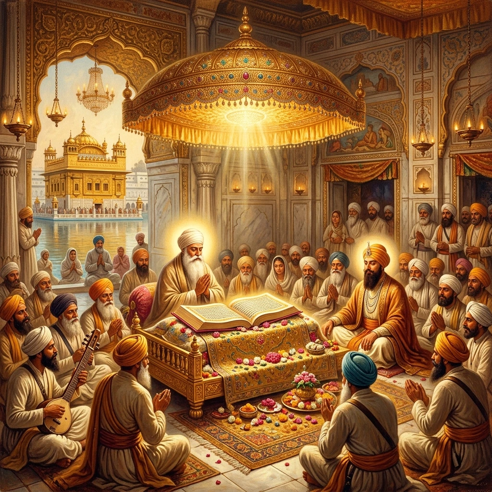
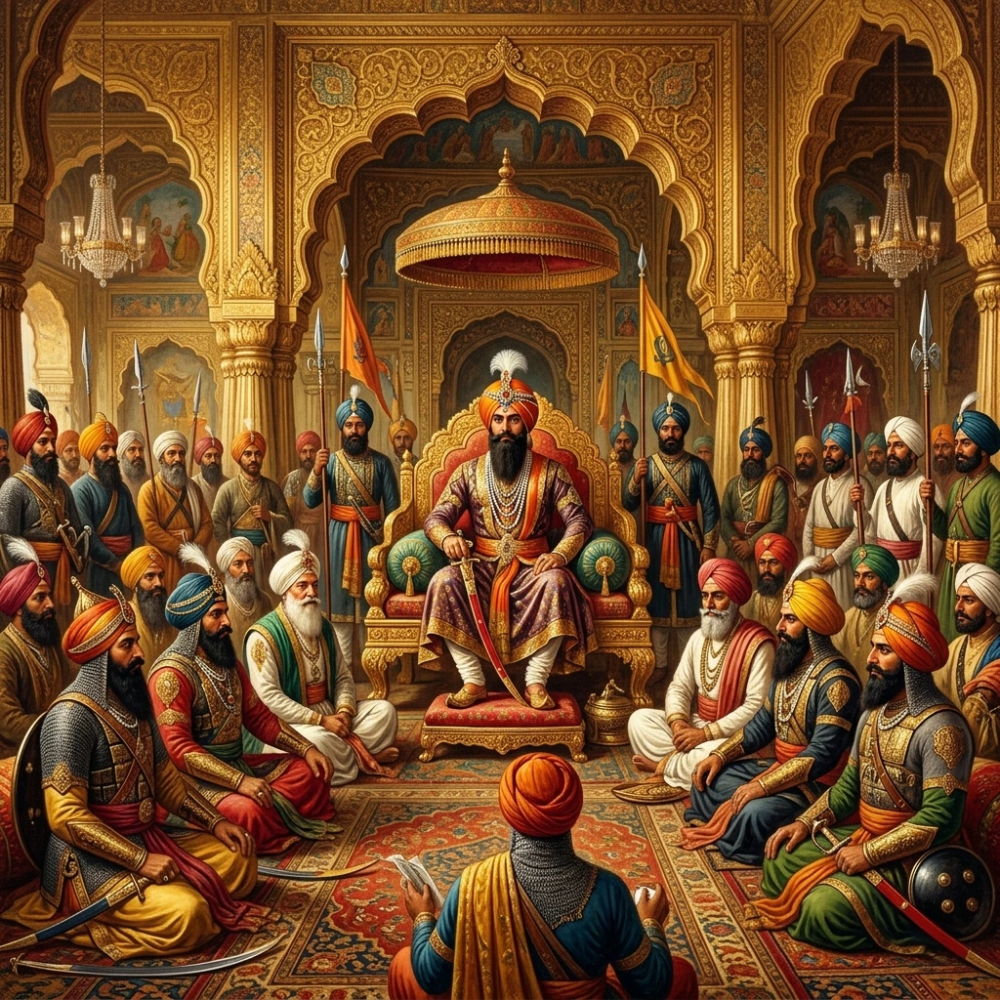
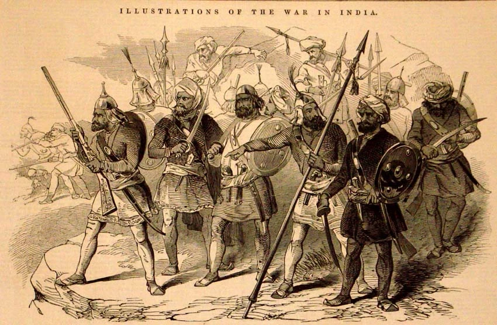
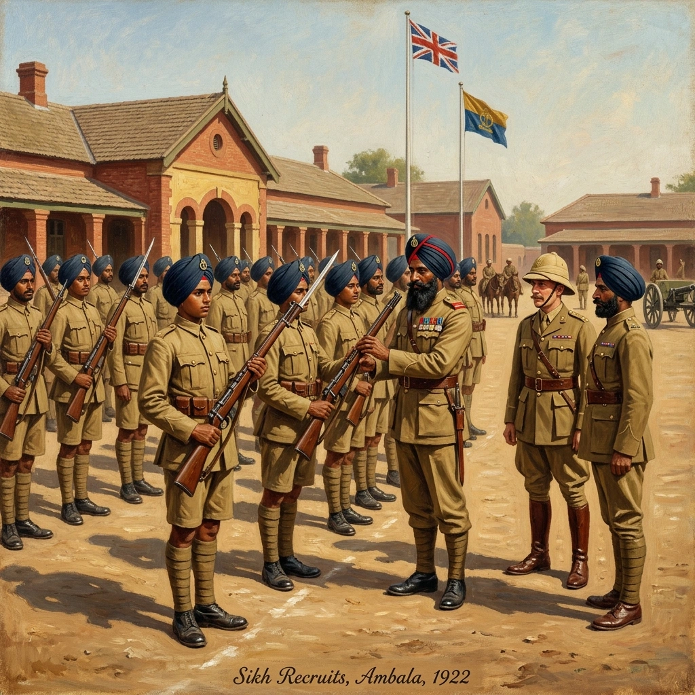

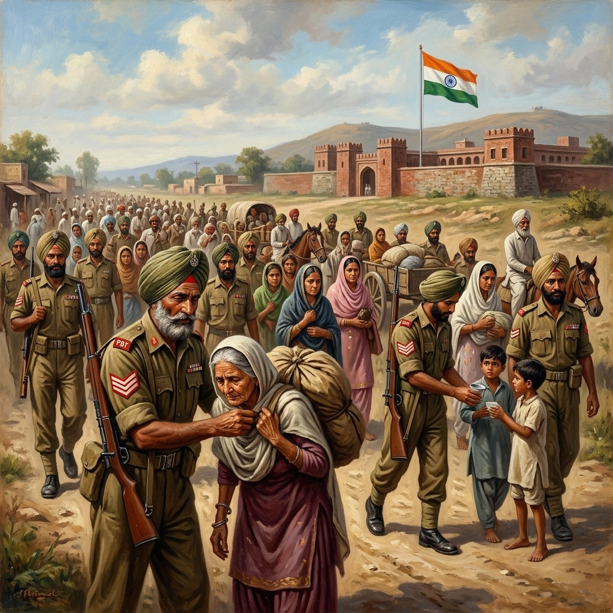


ਮੋਬਾਈਲ 'ਤੇ ਖੋਲ੍ਹੋ
ਆਪਣੇ ਫ਼ੋਨ 'ਤੇ ਇਸ ਗੈਲਰੀ ਨੂੰ ਅੰਗਰੇਜ਼ੀ, ਹਿੰਦੀ ਜਾਂ ਪੰਜਾਬੀ ਵਿੱਚ ਦੇਖਣ ਲਈ ਸਕੈਨ ਕਰੋ।